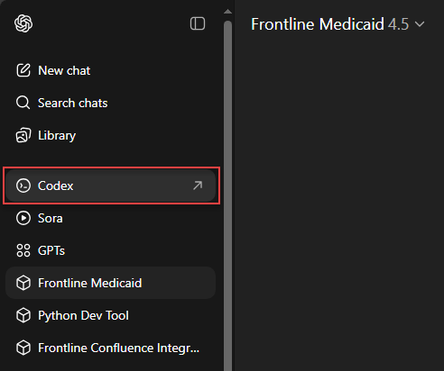
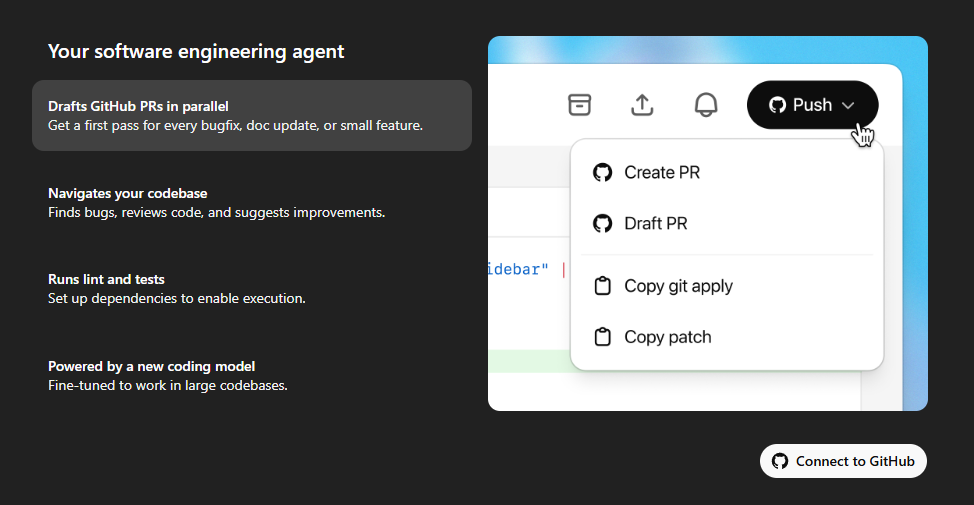
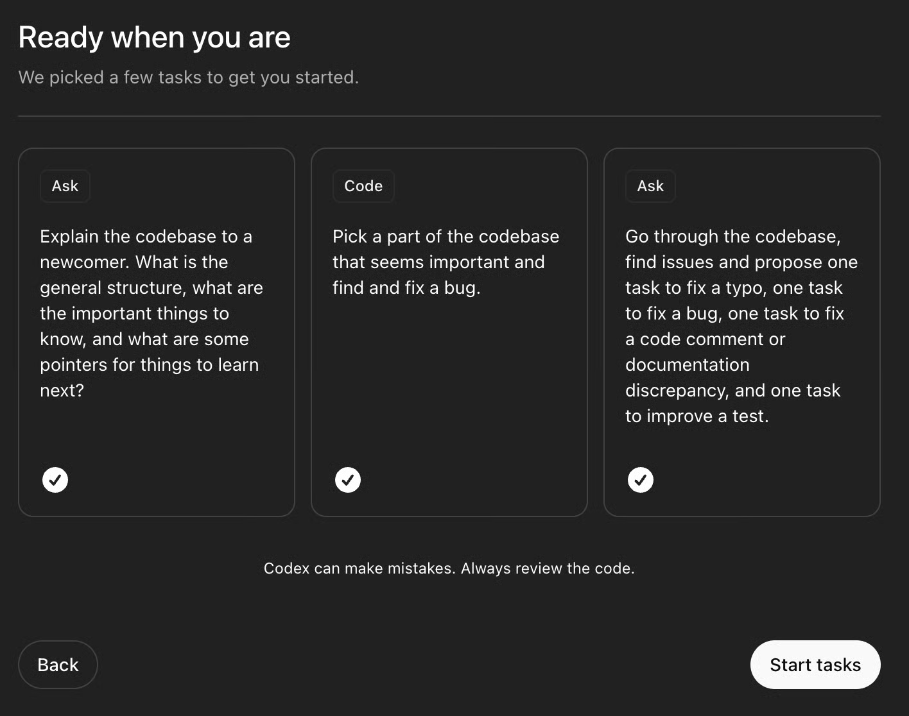

ChatGPT Codex
What is ChatGPT Codex?
ChatGPT Codex is like having a smart coding assistant that helps you write and change code using plain English. Instead of doing everything by hand, you can just tell Codex what you want, and it will do the hard work for you!
- Turn your ideas or instructions into real code changes.
- Automating repetitive tasks.
- Makes coding easier, especially if you’re new to programming or Git.
How does it work?
- Tell Codex what you want: For example, “Add a button to the homepage” or “Fix the spelling mistake in the About page.”
- Codex writes the code: It understands your request and makes the changes for you.
- Review and merge: Codex shows you what it changed, so you can check and accept the updates.
Example: Codex shows you what changed before you accept it.
Getting Started (Setup)
-
In ChatGPT, look for the Codex link in the sidebar or menu. Click it to open Codex.
Step 1: Find and click the Codex link in ChatGPT.
-
When you click the Codex link, you’ll see the Codex start screen.
Step 2: The Codex start screen will appear.
-
Connect your GitHub account to Codex so it can help you with your code projects.
Step 3: Connect your GitHub account to Codex.
-
Set up your environment as shown below.
This step is just like what any new developer does when starting to work on a project. Here, you can install any software or libraries your project needs (called dependencies), add your API keys, and make sure everything is ready for Codex to help you. Think of it as preparing your workspace so you can start building and testing your code.Step 4: Set up your environment for Codex. -
After your environment is set up, Codex will use it to run, test, and make changes to your code when you assign tasks. You’ll see some suggested tasks to help you get started, like running the project, installing dependencies, or checking the code.
Step 5: Codex suggests some first tasks you can try in your new environment.
Best Practices for Using Codex
- Describe the task clearly. Write your request like you would when creating a JIRA ticket for a developer. Be specific about what you want changed or added.
- Include the business requirement. Explain why you need this change. This helps Codex understand the bigger picture.
- State the desired outcome. Describe what you expect to see after the change is made.
- List acceptance criteria. Provide clear conditions that must be met for the task to be considered complete.
- Break down large tasks. If your request is complex, split it into smaller, manageable steps. This makes it easier for Codex to help you and for you to review the changes.
- Review changes before merging. Always check what Codex has changed before accepting and merging the update.
- Test your project after changes. Run your project and make sure everything works as expected after Codex makes a change.
- Ask for help if needed. If you’re unsure how to describe a task, ask for examples or look at sample requests.

Tip: The more clearly you describe your task, the better Codex can help!
Frequently Asked Questions
- Do I need to know how to code? No! Codex is designed to help beginners. Just describe what you want in simple language.
- What is a repository? It’s just a folder where your code lives. Codex works with these folders to make changes.
- What if I make a mistake? Codex shows you all changes before you accept them, so you can always review and undo if needed.
Need More Help?
If you get stuck, check the documentation or ask for help! Codex is here to make coding easier for everyone.